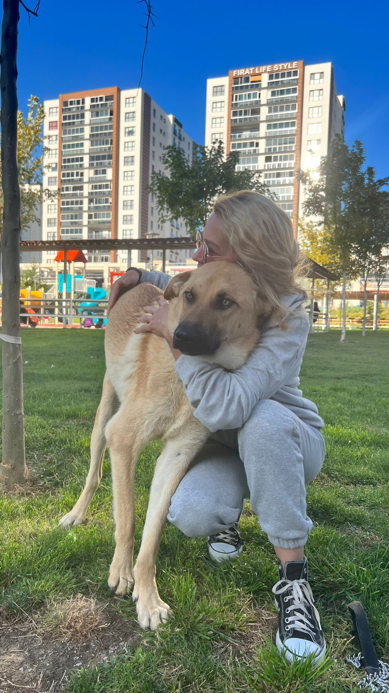
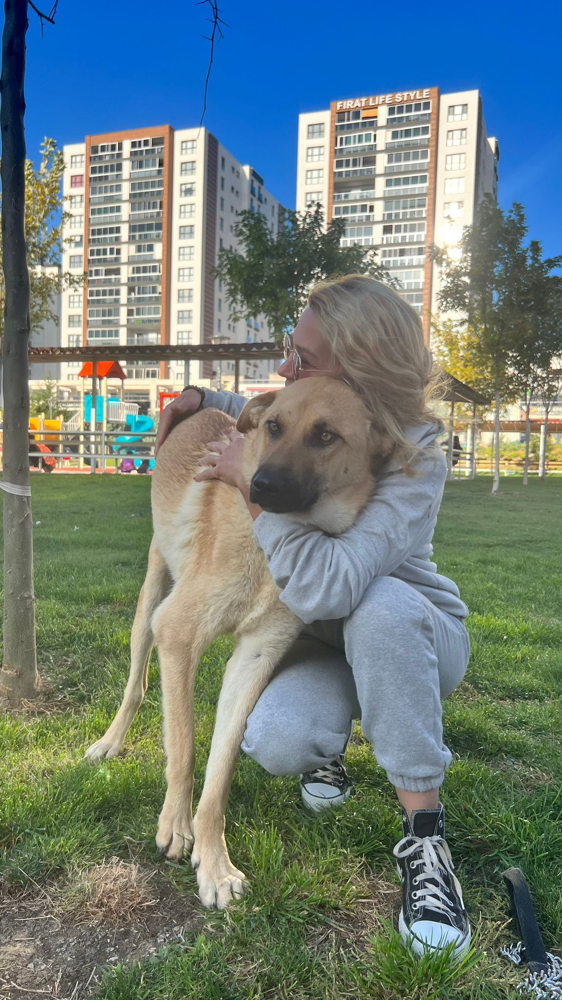

"Her can ikinci bir şansı hak eder..."
Şanslı köpeğimizin hikayesi, bir yol kenarında başladı. Bir arabanın çarpıp öylece bırakıp gittiği canımız, yol kenarında ölüme yatmış haldeydi ki yolumuz kesişti. İlk müdahalesini hemen Muş'ta gerçekleştirdik, ancak durumu daha kapsamlı bir tedavi gerektiriyordu.
Daha detaylı tedavisi için Petnakil desteğiyle Ankara'ya naklini sağladık. Burada tam 3 ay boyunca süren yoğun bir tedavi süreci geçirdi. Bu süreçte Şanslı'nın yaşama olan bağlılığı ve iyileşme azmi hepimize ilham verdi.
Ve sonunda o mutlu gün geldi! Tedavisi tamamlanan Şanslı'mız için ömürlük, sevgi dolu bir aile bulduk. Bugün artık sağlıklı, mutlu ve onu seven ailesiyle birlikte huzur içinde yaşıyor. Şanslı'nın hikayesi, asla pes etmememiz gerektiğini ve her canın bir şansı hak ettiğini bizlere bir kez daha gösterdi.